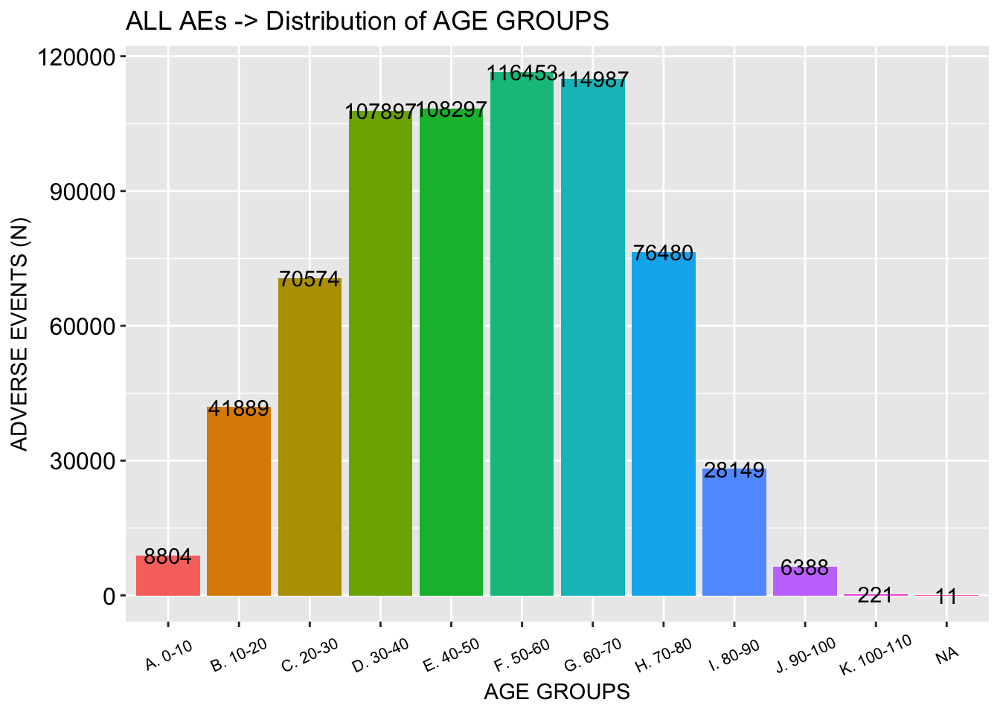

This is an R Markdown sheet generated from the VAERS data. I included some code but for the most part, only figures are shown. I decided to show figures pertaining to Death, Spontaneous abortions, Breakthrough COVID-19 infections and Cardiovascular, Neurological and Immunological adverse events.
I start by coalescing the .csv files downloaded from the VAERS website: https://vaers.hhs.gov/data/datasets.html
SEVERE ADVERSE EVENTS (SAE) COMPARED TO VAERS (SAE) STANDARD (15%) - CONSISTENTLY HIGHER
DISTRIBUTION OF ALL DATA BY AGE GROUP - THE MAJORITY OF INDIVIDUALS ARE BETWEEN THE AGES OF 30 AND 70
 NUMBER OF SPONTANEOUS ABORTIONS
NUMBER OF SPONTANEOUS ABORTIONS
## [1] 241DISTRIBUTION OF SPONTANEOUS ABORTIONS - THIS SUBSET IS GROWING WEEKLY 
THE PLOTS SHOWING OBSERVED VERSUS EXPECTED TRAJECTORIES SHOW CLUSTERING OF DATA AROUND ‘0’ - A LARGER PROPORTION OF REPORTS WERE MADE WITHIN 24 HOURS THAT ONE WOULD EXPECT TO SEE IF THERE WAS NO CAUSALITY
Plot showing OBSERVED (orange) vs. EXPECTED (yellow) percentages of specific time-frames between Vaccination Date and Miscarriage Date
 HEATMAPS ARE BEAUTIFUL WAYS TO ILLUSTRATE A LOT OF INFORMATION IN A SINGLE FIGURE. THESE HEATMAPS SHOW THE INTERSECTIONS OF INJECTION DATES AND ONSET OF ADVERSE EVENT DATES AS PER SPECIFIC AE GROUP. THE COLOR OF THE INTERSECTION ‘BLOCK’ INDICATES THE NUMBER OF INTERSECTIONS THAT OCCURRED - RED = HIGHEST; BLUE = LOWEST. POINTS LYING ON THE DIAGONAL HAVE A CORRELATION COEFFICIENT WHERE R = 1, INDICATING A 1:1 CORRELATION.
HEATMAPS ARE BEAUTIFUL WAYS TO ILLUSTRATE A LOT OF INFORMATION IN A SINGLE FIGURE. THESE HEATMAPS SHOW THE INTERSECTIONS OF INJECTION DATES AND ONSET OF ADVERSE EVENT DATES AS PER SPECIFIC AE GROUP. THE COLOR OF THE INTERSECTION ‘BLOCK’ INDICATES THE NUMBER OF INTERSECTIONS THAT OCCURRED - RED = HIGHEST; BLUE = LOWEST. POINTS LYING ON THE DIAGONAL HAVE A CORRELATION COEFFICIENT WHERE R = 1, INDICATING A 1:1 CORRELATION.
HEATMAP showing correlation between Vaccine Date and Onset Date for Spontaneous Abortions
 Distribution of all Breakthrough COVID-19 cases by age group
Distribution of all Breakthrough COVID-19 cases by age group
 CUMULATIVE BREAKTHROUGH COVID-19 CASES
CUMULATIVE BREAKTHROUGH COVID-19 CASES

BREAKTHROUGH COVID CASES BY MANUFACTURER
BREAKTHROUGH COVID-19 CASES WHO DIED
Pie chart for distribution of vax manu data in US population (U.S. COVID-19 Vaccine Delivered by Vaccine Type
Date generated: CDC | Data as of: May 4, 2021 6:00am ET. Posted: Tuesday, May 25, 2021 6:00 PM ET https://covid.cdc.gov/covid-data-tracker/#vaccinations
BREAKTHROUGH COVID-19 CASES WHO DIED BY AGE
Plot showing OBSERVED (orange) vs. EXPECTED (yellow) percentages of specific time-frames between Vaccination Date and Death Date
 HEATMAP showing correlation between Vaccine Date and Onset Date for Deaths
HEATMAP showing correlation between Vaccine Date and Onset Date for Deaths
 Plot showing OBSERVED (orange) vs. EXPECTED (yellow) percentages of specific time-frames between Vaccination Date and Onset Date of Cardiovascular Adverse Event
Plot showing OBSERVED (orange) vs. EXPECTED (yellow) percentages of specific time-frames between Vaccination Date and Onset Date of Cardiovascular Adverse Event
 HEATMAP showing correlation between Vaccine Date and Onset Date for Cardiovascular Adverse Events
HEATMAP showing correlation between Vaccine Date and Onset Date for Cardiovascular Adverse Events
 Plot showing OBSERVED (orange) vs. EXPECTED (yellow) percentages of specific time-frames between Vaccination Date and Onset Date of Neurological Adverse Event
Plot showing OBSERVED (orange) vs. EXPECTED (yellow) percentages of specific time-frames between Vaccination Date and Onset Date of Neurological Adverse Event
 HEATMAP showing correlation between Vaccine Date and Onset Date for Neurological Adverse Events
Plot showing OBSERVED (orange) vs. EXPECTED (yellow) percentages of specific time-frames between Vaccination Date and Onset Date of Immunological Adverse Event
HEATMAP showing correlation between Vaccine Date and Onset Date for Neurological Adverse Events
Plot showing OBSERVED (orange) vs. EXPECTED (yellow) percentages of specific time-frames between Vaccination Date and Onset Date of Immunological Adverse Event
 HEATMAP showing correlation between Vaccine Date and Onset Date for Immunological Adverse Events
HEATMAP showing correlation between Vaccine Date and Onset Date for Immunological Adverse Events

Histograms to show distributions by age group in Death, Hospital, ER, CV, Neuro and Immuno AE groups


VAERS ID counts per year normalized to U.S. population per million people
 Absolute number of Adverse Events (cumulative sum)
Absolute number of Adverse Events (cumulative sum)
 Absolute numbers of Adverse Events as per Category
Absolute numbers of Adverse Events as per Category
 Absolute number of Adverse Events by Category normalized to fully-vaxxed population/million
Absolute number of Adverse Events by Category normalized to fully-vaxxed population/million
 THE FOLLOWING IS A NEW ADVERSE EVENT GROUP THAT I CREATED BY WRITING A FUNCTION THAT PULLS OUT AES BY KEYWORD. THIS NEW AE GROUP INCLUDED FEMALE REPRODCUTIVE ISSUES THAT OCCURRED IN WOMEN POST-INJECTION.
THE FOLLOWING IS A NEW ADVERSE EVENT GROUP THAT I CREATED BY WRITING A FUNCTION THAT PULLS OUT AES BY KEYWORD. THIS NEW AE GROUP INCLUDED FEMALE REPRODCUTIVE ISSUES THAT OCCURRED IN WOMEN POST-INJECTION.
## [1] 774